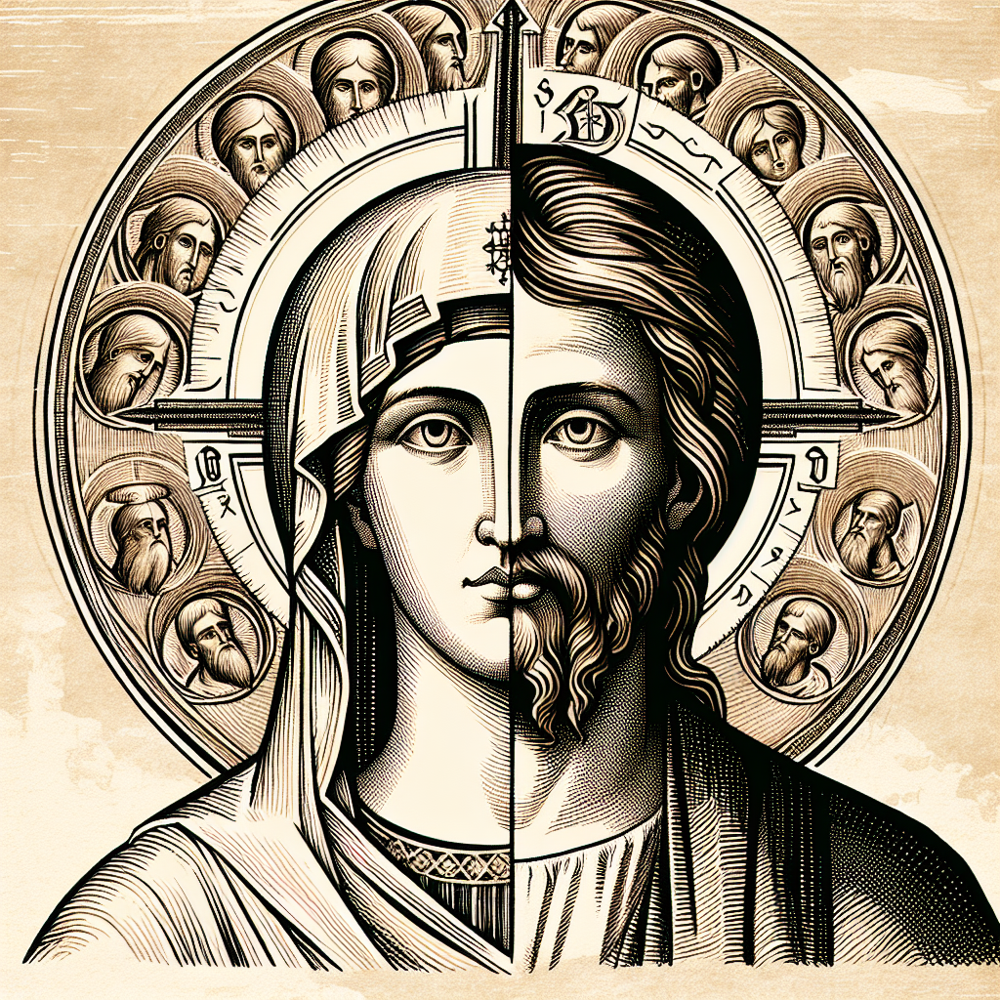

Why Jesus Christ is 100 percent man and 100 percent God
In the realm of Christian theology, one of the most profound and yet commonly misunderstood truths is the dual nature of Jesus Christ as both 100 percent man and 100 percent God. This concept, known as the hypostatic union, is a foundational belief that sets Christianity apart from other faith traditions.
As a Christian theologian dedicated to teaching others how to embody Christ-likeness, it is crucial to delve into the reasons why Jesus is understood in this unique way. By exploring the intricacies of the trinity - the Father, the Son, and the Holy Spirit - we can come to a deeper understanding of the divine nature of Christ.
The Bible, as the ultimate source of Christian wisdom and truth, provides us with insights into the identity of Jesus Christ. Through studying the scriptures and reflecting on the teachings of the early church fathers, we can grasp the significance of Jesus' dual nature and its implications for our faith.
Ultimately, embracing the reality of Jesus as both fully human and fully divine allows us to more fully appreciate the depth of God's love and the profound mystery of redemption. As we strive to live lives that reflect Christ-likeness, may we continually seek to grow in our understanding of who Jesus is and what his dual nature means for our own journey of faith.